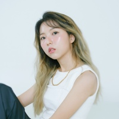

|
유정(YooJeong) |
OH MY GOSH |
00:00:00 ~ 00:02:27 |
|
BIG Naughty (서동현) |
Lovey Dovey (Feat. meenoi) |
00:02:27 ~ 00:06:06 |
|
이민혁 |
좋아해, 너를 |
00:06:06 ~ 00:09:47 |
|
첸 (CHEN) |
꽃잎이 지기 전에 |
00:09:47 ~ 00:13:36 |
|
그_냥 |
라일락 |
00:13:36 ~ 00:16:49 |
|
그래쓰 (GRASS) |
babyblue |
00:16:49 ~ 00:20:37 |
|
하현상 |
A Book of Love |
00:20:37 ~ 00:24:06 |
|
10CM |
서울의 잠 못 이루는 밤 (Feat. 이수현) |
00:24:06 ~ 00:28:24 |
|
샘김 (Sam Kim) |
여름비 |
00:28:24 ~ 00:31:46 |
 |
멜로망스 |
사랑인가 봐 |
00:31:46 ~ 00:34:51 |
|
최유리 |
둘이 |
00:34:51 ~ 00:38:18 |
|
이민혁 |
아로하 |
00:38:18 ~ 00:42:40 |
|
CHEEZE (치즈) |
퐁당 (Pong Dang) |
00:42:40 ~ 00:46:33 |
|
dori |
Girlfriend |
00:46:33 ~ 00:48:57 |
|
그리즐리 (Grizzly) |
Beige coat |
00:48:57 ~ 00:51:56 |
|
수우 (soowoo) |
All I Have |
00:51:56 ~ 00:54:45 |
|
OuiOui (위위) |
빈칸 (웹툰 '연애의 발견' X OuiOui (위위)) |
00:54:45 ~ 00:58:08 |
|
마인드유 |
사랑해줘요 |
00:58:08 ~ 01:01:17 |
|
윤현상 |
춤추는 우주 |
01:01:17 ~ 01:05:42 |
|
PL (피엘) |
RAINBOW |
01:05:42 ~ 01:09:23 |
|  |
스텔라 장 (Stella Jang), 이민혁 |
인생 봄날 (Beautiful Mint Life) |
01:09:23 ~ 01:12:47 |
|
CHEEZE (치즈) |
HAPPI |
01:12:47 ~ 01:16:38 |
|
적재 |
처음 사랑해 |
01:16:38 ~ 01:19:40 |
|
크래커 (CRACKER) |
너의 바다 (Feat. 김호연) |
01:19:40 ~ 01:22:59 |
|
정아로 |
소나기 |
01:22:59 ~ 01:26:24 |
|
이아람 |
미움받을 용기 |
01:26:24 ~ 01:29:57 |
|
멜로망스 |
동화 |
01:29:57 ~ 01:33:44 |
|
네이비쿼카 (NavyQuokka) |
You and I |
01:33:44 ~ 01:36:44 |
|
최유리 |
그래도 |
01:36:44 ~ 01:40:07 |
 |
정예원 (YEWON) |
모든 날의 이유 (feat. 재희 of 마인드유) |
01:40:07 ~ 01:43:47 |
|
homezone |
책을 넘기는 듯한 마음으로 (Remaster) |
01:43:47 ~ 01:47:00 |
 |
김뮤지엄 (KIMMUSEUM) |
Paint Laurent (Original Emotion Track) |
01:47:00 ~ 01:50:14 |
|
허회경 |
그렇게 살아가는 것 |
01:50:14 ~ 01:53:28 |
|
네이비쿼카 (NavyQuokka) |
Why |
01:53:28 ~ 01:56:24 |
|
데이먼스 이어 (Damons year) |
josee! |
01:56:24 ~ 01:58:28 |
|
애주레버 (Azurever) |
흑백 |
01:58:28 ~ 02:01:48 |
|
OuiOui (위위) |
LOVER |
02:01:48 ~ 02:05:04 |
|
유정 (YooJeong)> |
Love is You |
02:05:04 ~ 02:07:45 |
|
문빛 |
어느새 너에게 |
02:07:45 ~ 02:11:53 |
|
CHEEZE (치즈) |
사르르쿵 |
02:11:53 ~ 02:14:59 |
|
정아로 |
첫사랑 |
02:14:59 ~ 02:18:08 |
|
문빛 |
네가 궁금해 (Feat. 109) |
02:18:08 ~ 02:21:12 |
|
수우 (soowoo) |
Moonlight (Feat. 유정) |
02:21:12 ~ 02:23:41 |
|
dori |
YOU AND I |
02:23:41 ~ 02:26:23 |
|
스윗소로우 (SWEET SORROW) |
My Cinema |
02:26:23 ~ 02:30:49 |